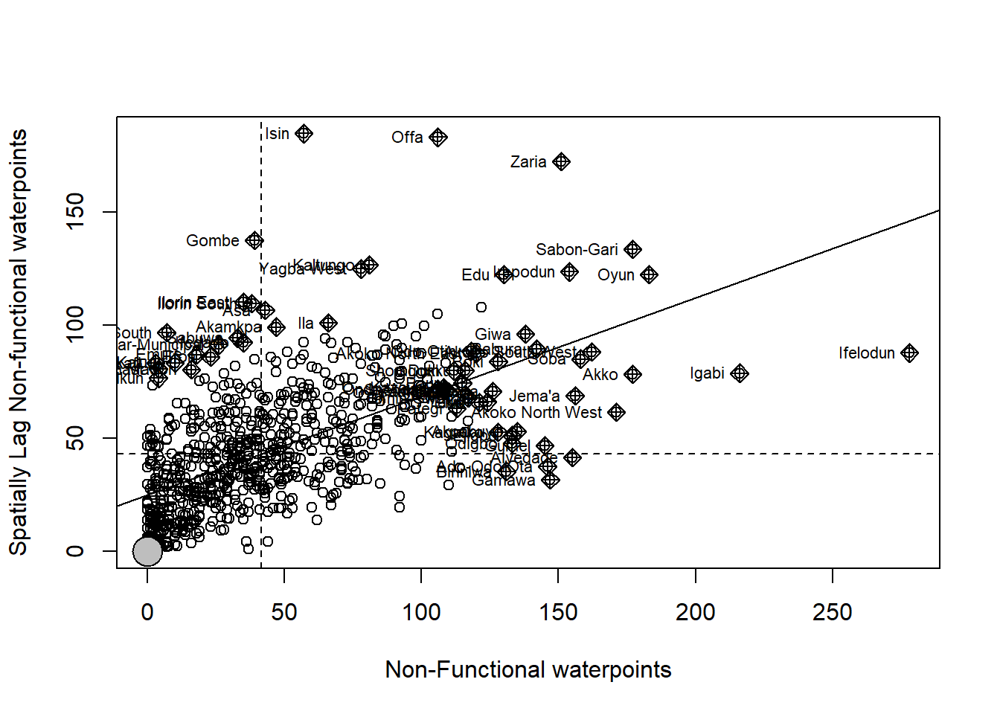

pacman::p_load(sf, spdep, tmap, tidyverse,funModeling)Geospatial Analytics for Social Good: Spatial Distribution of Water Points in Nigeria
Background
Water is an essential resource, providing healthy environment, a sustainable economy, reducing poverty and also ensuring peace and security. Importance of accessible and clear water is very critical, already 40% of the population doesn’t have access to safe drinkable water. The scarcity of water leads to imbalance in the ecosystem. There will be food scarcity as agricultural department is dependent on world’s accessible freshwater.
Scarcity of fresh water is so adverse that 80% of illness in developing countries are because of lack of sanitation and clean water. Providing clean water in rural communities of the developing countries is still a major issue in many countries globally, especially countries in Africa continent.
To address this issue a projected has been initiated with aim to collect water point related data from rural areas at the water point or small water scheme level and share the data via WPdx Data Repository, a cloud-based data library.
Objective
To address complex problems faced by society using geospatial analysis. Using appropriate global and local measures of spatial Association techniques, the spatial patterns of Not Functional water points are revealed. In this exercise, Nigeria will be used as a study point country.
The Data
Aspatial Data
The data from WPdx Global Data Repositories will be used, WPdx+ data set.
Geospatial Data
Nigeria Level-2 Administrative Boundary (also known as Local Government Area) polygon features GIS data will be used downloaded from geoBoundaries.
The Task
Data Wrangling
Following tasks will be performed in geospatial analysis:
Using appropriate sf method, importing the shapefile into R and save it in a simple feature data frame format.
Using appropriate tidyr and dplyr methods, proportion of functional and non-functional water point at LGA level is derived.
Combining the geospatial and aspatial data frame into simple feature data frame.
Performing outliers/clusters analysis by using appropriate local measures of spatial association methods.
Performing hotspot areas analysis by using appropriate local measures of spatial association methods.
Thematic Mapping
- Maps are plotted to show the spatial distribution of functional and non-functional water point rate at LGA level by using appropriate thematic mapping technique provided by tmap package.
Analytical Mapping
- Hotspot areas and outliers/clusters maps of functional and non0functional water point rate at LGA level by using appropriate thematic mapping technique provided by tmap package.
Getting Started
Setting the Analytical Tools
Installing and launching R packages into R environment
Explanation of the following packages:
sf: used for importing, managing, and processing geospatial data
tidyverse: a collection of packages for data science tasks
tmap: used for creating thematic maps, such as choropleth and bubble maps
spdep: used for following computations:
- Global Spatial Autocorrelation (GSA) statistics
- Local Indicator of Spatial Association (LISA) statistics for detecting clusters and outliers
- Getis-Ord’s Gi-statistics for detecting hot spot or/and cold spot area
- Global Spatial Autocorrelation (GSA) statistics
funModeling: used for Exploratory data analysis, data preparation and model performance
Import shapefile into R environment
Importing water point geospatial
Using, st_read() of sf package, Nigeria Level-2 Administrative Boundary shapefile is imported into R environment.
wp <- st_read(dsn = "Geodata",
layer = "geo_export",
crs = 4326) %>%
filter(clean_coun == "Nigeria")Things to learn from the code chunk above:
**st_read()** of sf package is used to import geo_export shapefile into R environment and save the imported geospatial data into simple feature data table.
**filter()** of dplyr package is used to extract water point records of Nigeria. In the code chunk below, “write_rds()” of reader package is used to save the extracted sf table …..
Next, `write_rds()` of readr package is used to save the extracted sf data table (i.e. wp) into an output file in rds data format. The output file is called *wp_nga.rds* and it is saved in *geodata* sub-folder.
write_rds(wp, "Geodata/wp_nga.rds")Importing Nigeria LGA boundary data
Now, we are going to import the LGA boundary data into R environment by using the code chunk below.
nga <- st_read(dsn = "Geodata",
layer= "geoBoundaries-NGA-ADM2",
crs = 4326)Thing to learn from the code chunk above.
- `st_read()` of **sf** package is used to import *geoBoundaries-NGA-ADM2* shapefile into R environment and save the imported geospatial data into simple feature data table.
Data Wrangling
Recoding the NA values into string
In the code chunk below, `replace_na()` is used to recode all the *NA* values in *status_cle* field into *Unknown*.
wp_nga <- read_rds("geodata/wp_nga.rds") %>%
mutate(status_cle = replace_na(status_cle, "Unknown"))Exploratory Data Analysis
In the code chunk below, freq() of funModeling package is used to display the distribution of status_cle field in wp_nga.
freq(data=wp_nga,
input = 'status_cle')Extracting Water Points
By using classes in status_cle field, extracting water points records for Nigeria.
Extracting functional water point
Using, filter() of dplyr is used to select functional water points.
wpt_functional <- wp_nga %>%
filter(status_cle %in%
c("Functional",
"Functional but not in use",
"Functional but needs repair"))freq(data=wpt_functional,
input = 'status_cle')Extracting non-functional water points
Using, filter() of dplyr is used to select non-functional water points.
wpt_nonfunctional <- wp_nga %>%
filter(status_cle %in%
c("Abandoned/Decommissioned",
"Abandoned",
"Non-Functional",
"Non functional due to dry season",
"Non-Functional due to dry season"))freq(data=wpt_nonfunctional,
input = 'status_cle')Extracting water point with unknown class
Using, filter() of dplyr is used to select water points with unknown status.
wpt_unknown <- wp_nga %>%
filter(status_cle == "Unknown")Performing Point-in Polygon Count
nga_wp <- nga %>%
mutate(`total wpt` = lengths(
st_intersects(nga, wp_nga))) %>%
mutate(`wpt functional` = lengths(
st_intersects(nga, wpt_functional))) %>%
mutate(`wpt non-functional` = lengths(
st_intersects(nga, wpt_nonfunctional))) %>%
mutate(`wpt unknown` = lengths(
st_intersects(nga, wpt_unknown)))Saving the Analytical Data Table
Learnings from code chunks:
mutate()of dplyr package is used to derive two fields namely pct_functional and pct_non-functional.to keep the file size small,
select()of dplyr is used to retain only field 3,4,9,10, 18,19,20,21,22,and 23.
nga_wp <- nga_wp %>%
mutate(pct_functional = `wpt functional`/`total wpt`) %>%
mutate(`pct_non-functional` = `wpt non-functional`/`total wpt`)write_rds(nga_wp, "Geodata/nga_wp.rds")Visualising the spatial distribution of water points
nga_wp <- read_rds("Geodata/nga_wp.rds")
#| fig-width: 14
#| fig:height: 12
tm_shape(nga_wp)+
tm_fill(c("total wpt","wpt functional","wpt non-functional","wpt unknown"),
style = "quantile",
palette = "Blues") +
tm_layout(main.title = "Distribution of Water Points",
main.title.position = "center",
main.title.size = 1,
legend.height = 0.25,
legend.width = 0.35,
legend.position = c("right", "bottom"),
frame = TRUE) +
tm_borders(alpha = 0.5)Using maps we can observe exact number of total, non functional, non-functional and unknown spatial distribution of water points. (Figure 1)
Fig 1: Visual spatial distribution of water points
Observations
Above visualization shows the spatial distribution of water points in functional, non functional and unknown classes. The darker blue shade shows that proportion of water points in the particular region is highest among all the neighboring regions.
It can be observed that cluster of Wukari, Gassol, Ardo Kola, Zing, Bali has high proportion of functional, non functional and unknown class water points.
Thematic Mapping
Thematic maps are the single0topic maps that focus on specific themes or phenomena. By using. tmap() package,spatial distribution of functional and non functional water point rate at LGA level can be plotted.
But for our study we will only plot the non functional spatial distribution of water points using the code chunk below:
equal <- tm_shape(nga_wp) +
tm_fill("wpt non-functional",
n = 5,
style = "equal") +
tm_borders(alpha = 0.5) +
tm_layout(main.title = "Equal interval classification")
quantile <- tm_shape(nga_wp) +
tm_fill("wpt non-functional",
n = 5,
style = "quantile") +
tm_borders(alpha = 0.5) +
tm_layout(main.title = "Equal quantile classification")
tmap_arrange(equal,
quantile,
asp=1,
ncol=2)
Left Map: It shows the equal interval classification of non functional spatial distribution of water points.
Right Map: It shows the equal quantile classification of non functional spatial distribution of water points.
Computing Contiguity Spatial Weights
Global spatial autocorrelation statistics is computed and spatial complete randomness test for global spatial autocorrelation is performed.
We are using Queen method, considering areas adjacent if they are located horizontally, vertically and diagonally on a 2-D plane.
Using the code chunk below, Queen contiguity weight matrix is computed:
wm_q <- poly2nb(nga_wp,
queen=TRUE)
summary(wm_q)Neighbour list object:
Number of regions: 774
Number of nonzero links: 4440
Percentage nonzero weights: 0.7411414
Average number of links: 5.736434
1 region with no links:
86
Link number distribution:
0 1 2 3 4 5 6 7 8 9 10 11 12 14
1 2 14 57 125 182 140 122 72 41 12 4 1 1
2 least connected regions:
138 560 with 1 link
1 most connected region:
508 with 14 linksIn the above code chunk, poly2nb() of spdep package is used to compute contiguity weight matrices for the study area.
The summary report shows that in Nigeria area there are 774 area units. The most number of neighbors are with 508th area unit and the least number of neighbors are with 138th and 560th area unit. There is a region, 86th with no neighbors.
set.ZeroPolicyOption(TRUE)[1] FALSERow- Standardized weight matrix
In this method, each neighboring polygon will assigned with equal weights (style=“W”). W means sum over all links to n. It is done by assigning the fraction 1/(#ofneighbors) to each neighboring county then summing the weighted income values.
There are 2 major arguments of function nb2listw():
- styles can take values “W”, “B”, “C”, “U”, “minmax” and “S”.
- If zero policy is set to TRUE, weights vectors of zero length are inserted for regions without neighbor in the neighbours list. These will in turn generate lag values of zero, equivalent to the sum of products of the zero row t(rep(0, length=length(neighbours))) %*% x, for arbitrary numerical vector x of length length(neighbours). The spatially lagged value of x for the zero-neighbour region will then be zero, which may (or may not) be a sensible choice.
rswm_q <- nb2listw(wm_q,
style="W",
zero.policy = TRUE)
rswm_qCharacteristics of weights list object:
Neighbour list object:
Number of regions: 774
Number of nonzero links: 4440
Percentage nonzero weights: 0.7411414
Average number of links: 5.736434
1 region with no links:
86
Weights style: W
Weights constants summary:
n nn S0 S1 S2
W 773 597529 773 285.0658 3198.414The above summary report shows that there are 774 total number of regions. Using, row standardized weight matrix there are on an average 5 neighbors per region.
Global Spatial Autocorrelation: Moran’s I
Using the code chunk below, moran.test() from spdep, Moran’s I statistics testing will be performed on non functional water points.
moran.test(nga_wp$`wpt non-functional`,
listw=rswm_q,
zero.policy = TRUE,
na.action=na.omit)
Moran I test under randomisation
data: nga_wp$`wpt non-functional`
weights: rswm_q n reduced by no-neighbour observations
Moran I statistic standard deviate = 20.043, p-value < 2.2e-16
alternative hypothesis: greater
sample estimates:
Moran I statistic Expectation Variance
0.433932927 -0.001295337 0.000471516 The code chunk above, moran.test() is used Moran’s test for spatial autocorrelation using a spatial weights matrix in weights list form.
Observation
It can be observed that Z value, 0.433, is greater than zero. Therefore, it can be concluded non functional spatial distribution of water points are clusters and observations tend to be similar. But before making final conclusion on statistical test, we will perform Monte Carlo Moran’s I simulation.
Computing Monte Carlo’s Moran’s I
Monte Carlo simulation is performed when there is a doubt that the assumptions of Moran’s I are true (normality and randomization).
The code chunk below performs permutation test for Moran’s I statistic by using moran.mc() of spdep. A total of 1000 simulation will be performed.
nsim is set as 999 for 1000 simulations as 0 is also included.
set.seed(1234)
bperm= moran.mc(nga_wp$`wpt non-functional`,
listw=rswm_q,
nsim=999,
zero.policy = TRUE,
na.action=na.omit)
bperm
Monte-Carlo simulation of Moran I
data: nga_wp$`wpt non-functional`
weights: rswm_q
number of simulations + 1: 1000
statistic = 0.43393, observed rank = 1000, p-value = 0.001
alternative hypothesis: greaterObservations
Null Hyposthesis: The distribution of non functional water points are random phenomenon.
Alternative Hypothesis: that the distribution non functional water points is spatially dependent through calculating the Moran’s I statistic and Geary’s C ratio for the data set
From the above results, we can observe p value is less than significant level of 0.05. Therefore, we can reject the null hypothesis. It can be concluded that distribution of non functional water points are spatially dependent through calculating the Moran’s I statistics ratio for the data set.
Visualizing Monte Carlo Moran’s I
Monte Carlo Moran’s I statistics testing will be visualized by plotting the distribution of the statistical values as a histogram by using the code chunk below:
In the code chunk below hist() and abline() of R Graphics are used.
mean(bperm$res[1:999])[1] -0.0005316305var(bperm$res[1:999])[1] 0.0004973974summary(bperm$res[1:999]) Min. 1st Qu. Median Mean 3rd Qu. Max.
-0.0651127 -0.0150421 -0.0020783 -0.0005316 0.0143726 0.0798599 hist(bperm$res,
freq=TRUE,
breaks=20,
xlab="Simulated Moran's I")
abline(v=0,
col="red") Learnings from above code chunk :
hist() -computes a histogram of the given data values.
abline()- This function adds one or more straight lines through the current plot
From the above histogram, it can interpreted that at Simulated Moran’s I value 0 then frequency of non functional spatial water distribution points are maximum.
Spatial Correlogram
Spatial correlogram are great to examine the patterns of spatial autocorrelation in the data or model residual.
They show how correlated are pairs of spatial observations when you increase the distance (lag) between them - they are plots of some index of autocorrelation (Moran’s I) against distance.
Compute Moran’s I Correlogram
Computation of 6-lag spatial correlogram of non functional water points. The global spatial autocorrelation used in Moran’s I. The plot() of base Graph is then used to plot the output.
MI_corr <- sp.correlogram(wm_q,
nga_wp$`wpt non-functional`,
order=6,
method="I",
style="W")
plot(MI_corr)
Above plot might not provide complete interpretation as not all autocorrelation values are statistically significant. Therefore, full analysis report is printed using the below code chunk.
print(MI_corr)Spatial correlogram for nga_wp$`wpt non-functional`
method: Moran's I
estimate expectation variance standard deviate Pr(I) two sided
1 (773) 4.3393e-01 -1.2953e-03 4.7152e-04 20.0433 < 2.2e-16
2 (773) 2.6647e-01 -1.2953e-03 2.0206e-04 18.8374 < 2.2e-16
3 (773) 1.9507e-01 -1.2953e-03 1.2189e-04 17.7863 < 2.2e-16
4 (773) 1.4019e-01 -1.2953e-03 8.7589e-05 15.1181 < 2.2e-16
5 (773) 6.3735e-02 -1.2953e-03 6.8779e-05 7.8413 4.459e-15
6 (773) 2.1698e-02 -1.2953e-03 5.7380e-05 3.0354 0.002402
1 (773) ***
2 (773) ***
3 (773) ***
4 (773) ***
5 (773) ***
6 (773) **
---
Signif. codes: 0 '***' 0.001 '**' 0.01 '*' 0.05 '.' 0.1 ' ' 1Observations
From the above output, it can be observed that all the 6 lag spatial correlogram, p value is less than the significant value of 0.05. Therefore null hypothesis, the non functional water points location of values may be altered without affecting the information content of the data, is rejected.
Cluster and Outlier Analysis
Local Indicators of Spatial Association or LISA are statistics that evaluate the existence of clusters in the spatial arrangement of a given variable. We are studying non functional spatial distribution of water points among census tracts in a Nigeria, local clusters in the rates mean that there are areas that have higher or lower rates than is to be expected by chance alone; that is, the values occurring are above or below those of a random distribution in space.
Computing local Moran’s I
Computing local Moran’s I of non functional water points at the county level using localmoran() function in spdep.
fips <- order(nga_wp$shapeName)
localMI <- localmoran(nga_wp$`wpt non-functional`, rswm_q)
head(localMI) Ii E.Ii Var.Ii Z.Ii Pr(z != E(Ii))
1 -0.32365786 -9.995243e-04 1.924638e-01 -0.73547576 0.46204980
2 0.07000542 -4.092463e-05 1.053077e-02 0.68258288 0.49487045
3 1.25819985 -1.627684e-03 4.181728e-01 1.94819847 0.05139122
4 -0.03537489 -5.427505e-05 5.954304e-03 -0.45773361 0.64714384
5 0.01201533 -2.590965e-04 3.988998e-02 0.06145673 0.95099547
6 0.00768085 -1.538445e-07 1.687859e-05 1.86960486 0.06153871localmoran() function returns a matrix of values whose columns are:
Ii: the local Moran’s I statistics
E.Ii: the expectation of local moran statistic under the randomisation hypothesis
Var.Ii: the variance of local moran statistic under the randomisation hypothesis
Z.Ii:the standard deviate of local moran statistic
Pr(): the p-value of local moran statistic
List the content of the local Moran matrix derived by using printCoefmat()
Mapping the Local Moran’s I
Before mapping, append the local Moran’s I dataframe (i.e. localMI) onto nga_wp SpatialPolygonDataFrame
nga_wp.localMI <- cbind(nga_wp,localMI) %>%
rename(Pr.Ii = Pr.z....E.Ii..)tm_shape(nga_wp.localMI) +
tm_fill(col = "Ii",
style = "pretty",
palette = "RdBu",
title = "local moran statistics") +
tm_borders(alpha = 0.5)Variable(s) "Ii" contains positive and negative values, so midpoint is set to 0. Set midpoint = NA to show the full spectrum of the color palette.
Mapping local Moran’s I p values
As li has both positive and negative values, therefore it is useful to consider p values for each of these values:
tm_shape(nga_wp.localMI) +
tm_fill(col = "Pr.Ii",
breaks=c(-Inf, 0.001, 0.01, 0.05, 0.1, Inf),
palette="-Blues",
title = "local Moran's I p-values") +
tm_borders(alpha = 0.5)Mapping both local Moran’s I values and p values (Non Functional)
Both the maps are plotted together for in depth comparison analysis for non functional water points in Nigeria.
localMI.map <- tm_shape(nga_wp.localMI) +
tm_fill(col = "Ii",
style = "pretty",
title = "local moran statistics") +
tm_borders(alpha = 0.5)
tm_layout(main.title= "Local Moran's I Statistics",
main.title.size = 0.7,
main.title.fontface = "bold")$tm_layout
$tm_layout$main.title
[1] "Local Moran's I Statistics"
$tm_layout$main.title.size
[1] 0.7
$tm_layout$main.title.fontface
[1] "bold"
$tm_layout$style
[1] NA
attr(,"class")
[1] "tm"pvalue.map <- tm_shape(nga_wp.localMI) +
tm_fill(col = "Pr.Ii",
breaks=c(-Inf, 0.001, 0.01, 0.05, 0.1, Inf),
palette="-Blues",
title = "local Moran's I p-values") +
tm_borders(alpha = 0.5)
tm_layout(main.title= "Local Moran's p-values(Non Functional)",
main.title.size = 0.7,
main.title.fontface = "bold")$tm_layout
$tm_layout$main.title
[1] "Local Moran's p-values(Non Functional)"
$tm_layout$main.title.size
[1] 0.7
$tm_layout$main.title.fontface
[1] "bold"
$tm_layout$style
[1] NA
attr(,"class")
[1] "tm"tmap_arrange(localMI.map, pvalue.map, asp=1, ncol=2)Variable(s) "Ii" contains positive and negative values, so midpoint is set to 0. Set midpoint = NA to show the full spectrum of the color palette.
Observation
“Green” regions are outlier regions with with relatively low value in surrounding regions. When same locations are compared in “Local Moran’s I p value” map, their p value is less than significant value 0.05, therefore these outlier regions are statistically significant.
“Light Orange” regions are clustered regions with relatively high value in surrounding regions. When these locations are compared with Local Moran’s p value map, their p values are more than significant value of 0.05, therefore, these clustered regions are not statistically significant.
Mapping both local Moran’s I values and p values (Functional)
Both the maps are plotted together for in depth comparison analysis for functional water points in Nigeria.
fips <- order(nga_wp$shapeName)
localMI_func <- localmoran(nga_wp$`wpt functional`, rswm_q)
nga_wp.localMI_func <- cbind(nga_wp,localMI_func) %>%
rename(Pr.Ii = Pr.z....E.Ii..)
localMI_func.map <- tm_shape(nga_wp.localMI_func) +
tm_fill(col = "Ii",
style = "pretty",
title = "local moran statistics") +
tm_borders(alpha = 0.5)
tm_layout(main.title= "Local Moran's I Statistics",
main.title.size = 0.7,
main.title.fontface = "bold")$tm_layout
$tm_layout$main.title
[1] "Local Moran's I Statistics"
$tm_layout$main.title.size
[1] 0.7
$tm_layout$main.title.fontface
[1] "bold"
$tm_layout$style
[1] NA
attr(,"class")
[1] "tm"func_pvalue.map <- tm_shape(nga_wp.localMI_func) +
tm_fill(col = "Pr.Ii",
breaks=c(-Inf, 0.001, 0.01, 0.05, 0.1, Inf),
palette="-Blues",
title = "local Moran's I p-values") +
tm_borders(alpha = 0.5)
tm_layout(main.title= "Local Moran's p-values(Functional)",
main.title.size = 0.7,
main.title.fontface = "bold")$tm_layout
$tm_layout$main.title
[1] "Local Moran's p-values(Functional)"
$tm_layout$main.title.size
[1] 0.7
$tm_layout$main.title.fontface
[1] "bold"
$tm_layout$style
[1] NA
attr(,"class")
[1] "tm"tmap_arrange(localMI.map, pvalue.map, asp=1, ncol=2)Variable(s) "Ii" contains positive and negative values, so midpoint is set to 0. Set midpoint = NA to show the full spectrum of the color palette.
Observation
“Green” regions are outlier regions with with relatively low value in surrounding regions. When same locations are compared in “Local Moran’s I p value” map, their p value is less than significant value 0.05, therefore these outlier regions are statistically significant.
“Light Orange” regions are clustered regions with relatively high value in surrounding regions. When these locations are compared with Local Moran’s p value map, their p values are more than significant value of 0.05, therefore, these clustered regions are not statistically significant. But some regions in the north side has p value less than significant value, therefore those clustered areas are statistically significant regions for functional distribution of spatial water points in Nigeria.
Creating LISA Cluster Map
It shows the significant locations color coded by type of spatial autocorrelation. The first step before we can generate the LISA cluster map is to plot the Moran scatterplot.
nci <- moran.plot(nga_wp$`wpt non-functional`, rswm_q,
labels=as.character(nga_wp$shapeName),
xlab="Non-Functional waterpoints",
ylab="Spatially Lag Non-functional waterpoints")
Outliers: It is significant and negative if location i is associated with relatively low values in surrounding locations.
Cluster: It is significant and positive if location i is associated with relatively high values of the surrounding locations.
The scatter plot is divided into 4 categories:
- Lower Left Quadrant (Low-Low)- these are clusters of low frequency of non functional spatial distribution of water points as against spatially lagged non functional points.
- Lower right Quadrant (High-Low)- these are the outliers where areas of high frequency of incidents where non functional water points occurred are located next to areas where there is low frequency of non functional water points in Nigeria occurred.
- Upper Left Quadrant (Low-High)- these are the outliers where low frequency of non functional water points occurred that are located next to areas where high frequency of non functional water points occured.
- Upper right Quadrant (High-High)- these are the clusters where indicates high spatial correlation where non functional water points areas are clustered closely together.
Plotting Moran scatterplot with standardized variables
First, using scale() to centers and scales the variable. Here centering is done by subtracting the mean (omitting NAs) the corresponding columns, and scaling is done by dividing the (centered) variable by their standard deviations.
The as.vector() added to the end is to make sure that the data type we get out of this is a vector, that map neatly into out dataframe.
nga_wp$Z.nonfunc <- scale(nga_wp$`wpt non-functional`) %>%
as.vector
nci2 <- moran.plot(nga_wp$Z.nonfunc, rswm_q,
labels=as.character(nga_wp$shapeName),
xlab="z-no functional points",
ylab="Spatially Lag non functional points")
NOTE: One of the drawback of Moran’s I scatterplot is that it does not indicate whether the above regions are significant or not.
Preparing LISA Map Classes (Non Functional)
quadrant <- vector(mode="numeric",length=nrow(localMI))
nga_wp$lag_non_func_points <- lag.listw(rswm_q, nga_wp$`wpt non-functional`)
DV <- nga_wp$lag_non_func_points - mean(nga_wp$lag_non_func_points)
C_mI <- localMI[,1] - mean(localMI[,1])
signif <- 0.05
quadrant[DV <0 & C_mI>0] <- 1
quadrant[DV >0 & C_mI<0] <- 2
quadrant[DV <0 & C_mI<0] <- 3
quadrant[DV >0 & C_mI>0] <- 4
quadrant[localMI[,5]>signif] <- 0
quadrant_func <- vector(mode="numeric",length=nrow(localMI_func))
nga_wp$lag_func_points <- lag.listw(rswm_q, nga_wp$`wpt functional`)
DV_func <- nga_wp$lag_func_points - mean(nga_wp$lag_func_points)
C_mI_func <- localMI[,1] - mean(localMI[,1])
signif <- 0.05
quadrant[DV_func <0 & C_mI_func>0] <- 1
quadrant[DV_func >0 & C_mI_func<0] <- 2
quadrant[DV_func <0 & C_mI_func<0] <- 3
quadrant[DV_func >0 & C_mI_func>0] <- 4
quadrant[localMI[,5]>signif] <- 0For each country/administrative region, LISA classification of the scores are assigned as follows:
If DV > 0 & C_mI > 0; it is categorised as “High-High” [4]
If DV < 0 & C_mI < 0; it is categorised as “Low-Low” [3]
If DV < 0 & C_mI > 0; it is categorised as “Low-High” [1]
If DV > 0 & C_mI < 0; it is categorised as “High-Low” [2]
Plotting LISA Map (Non Functional)
nga_wp.localMI$quadrant <- quadrant
colors <- c("#ffffff", "#2c7bb6", "#abd9e9", "#fdae61", "#d7191c")
clusters <- c("insignificant", "low-low", "low-high", "high-low", "high-high")
tm_shape(nga_wp.localMI) +
tm_fill(col = "quadrant",
style = "cat",
palette = colors[c(sort(unique(quadrant)))+1],
labels = clusters[c(sort(unique(quadrant)))+1],
popup.vars = c("")) +
tm_view(set.zoom.limits = c(11,17)) +
tm_borders(alpha=0.5)For effective interpretation, it is better to plot both the wpt non functional map and its LISA classification map next to each other.
nonfunc <- tm_shape(nga_wp)+
tm_fill("wpt non-functional",
style= "jenks",
n=6,
title= "wpt non functional")+
tm_layout(main.title= "NonFunctional WaterPoints")+
tm_borders(alpha=0.5)
nga_wp.localMI$quadrant <- quadrant
colors <- c("#ffffff", "#2c7bb6", "#abd9e9", "#fdae61", "#d7191c")
clusters <- c("insignificant", "low-low", "low-high", "high-low", "high-high")
LISAmap <- tm_shape(nga_wp.localMI) +
tm_fill(col = "quadrant",
style = "cat",
palette = colors[c(sort(unique(quadrant)))+1],
labels = clusters[c(sort(unique(quadrant)))+1],
popup.vars= c("")) +
tm_view(set.zoom.limits = c(11,17)) +
tm_borders(alpha=0.5)+
tm_layout(main.title= "LISA map with classification")
tmap_arrange(nonfunc, LISAmap,
asp=1, ncol=2)Observation
It can be observed that regions with more than 100 non functional water points are clustered regions with relatively high values of the surrounding regions as observed from the LISA classification map. All the high-high values are the clusters where indicates high spatial correlation where non functional water points areas are clustered closely together. “Dark Blue”, low low regions are the clusters of low frequency of non functional spatial distribution of water points.
Plotting LISA Map (Functional)
func <- tm_shape(nga_wp)+
tm_fill("wpt functional",
style= "jenks",
n=6,
title= "wpt functional")+
tm_layout(main.title= "Functional WaterPoints")+
tm_borders(alpha=0.5)
nga_wp.localMI_func$quadrant_func <- quadrant
colors <- c("#ffffff", "#2c7bb6", "#abd9e9", "#fdae61", "#d7191c")
clusters <- c("insignificant", "low-low", "low-high", "high-low", "high-high")
LISAmap_func <- tm_shape(nga_wp.localMI_func) +
tm_fill(col = "quadrant_func",
style = "cat",
palette = colors[c(sort(unique(quadrant)))+1],
labels = clusters[c(sort(unique(quadrant)))+1],
popup.vars= c("")) +
tm_view(set.zoom.limits = c(11,17)) +
tm_borders(alpha=0.5)+
tm_layout(main.title= "LISA map with classification")
tmap_arrange(func, LISAmap_func,
asp=1, ncol=2)Observations: All the high-high values are the clusters where indicates high spatial correlation where functional water points areas are clustered closely together. “Dark Blue”, low low regions are the clusters of low frequency of functional spatial distribution of water points.
Hot spot and Cold spot Area Analysis
Beside detecting cluster and outliers, localised spatial statistics can be also used to detect hot spot and/or cold spot areas.
“Hot Spot” is used to describe a region or value that is higher relative to its surroundings.
Getis and Ord’s G-Statistics
It is an alternative spatial statistics to detect spatial anomalies, looking at neighbors within a defined proximity to identify where either high or low values clutser spatially. Statistically significant hot-spots are recognised as areas of high values where other areas within a neighbourhood range also share high values too. The analysis consists of three steps:
Deriving spatial weight matrix
Computing Gi statistics
Mapping Gi statistics
Deriving Distance-based weight matrix
First, defining a new set of neighbors. Whist the spatial autocorrelation considered units which shared borders, for Getis-Ord we are defining neighbours based on distance.
There are two type of distance-based proximity matrix, they are:
fixed distance weight matrix; and
adaptive distance weight matrix.
Deriving the centroid
Coordinates in separate dataframe is required. The mapping function applies a given function to each element of a vector and returns a vector of the same length. Our input vector will be the geometry column of us.bound. Our function will be st_centroid(). We will be using map_dbl variation of map from the purrr package.
Calculation longitude, first value in each centroid; latitude, second value in each centroid; and then combining both longitude and latitude using the code chunk below.
longitude <- map_dbl(nga_wp$geometry, ~st_centroid(.x)[[1]])
latitude <- map_dbl(nga_wp$geometry, ~st_centroid(.x)[[2]])
coords <- cbind(longitude, latitude)Determine the cut-off distance
Upper limit for the distance is calculated using the following steps:
Return a matrix with the indices of points belonging to the set of the k nearest neighbours of each other by using knearneigh() of spdep.
Convert the knn object returned by knearneigh() into a neighbours list of class nb with a list of integer vectors containing neighbour region number ids by using knn2nb()
Return the length of neighbour relationship edges by using nbdists() of spdep. The function returns in the units of the coordinates if the coordinates are projected, in km otherwise.
Remove the list structure of the returned object by using unlist()
k1 <- knn2nb(knearneigh(coords))
k1dists <- unlist(nbdists(k1, coords, longlat = TRUE))
summary(k1dists) Min. 1st Qu. Median Mean 3rd Qu. Max.
2.662 12.815 20.242 22.031 27.706 71.661 The summary report shows that the largest first nearest neighbour distance is 71.66 km, so using this as the upper threshold gives certainty that all units will have at least one neighbour.
Computing fixed distance weight matrix
Using dnearneigh(), distance weight matrix is computed as shown in the code chunk below.
The functions dnearneigh() identifies neighbours of region points by Euclidean distance in the metric of the points between lower (greater than or equal to (changed from version 1.1-7)) and upper (less than or equal to) bounds, or with longlat = TRUE, by Great Circle distance in kilometers.
wm_d62 <- dnearneigh(coords, 0, 62, longlat = TRUE)
wm_d62Neighbour list object:
Number of regions: 774
Number of nonzero links: 13830
Percentage nonzero weights: 2.308555
Average number of links: 17.86822
6 regions with no links:
93 112 123 236 452 670Next, using nb2listw() nb objects are converted into spatial weight objects.
wm62_lw <- nb2listw(wm_d62, style = 'B')
summary(wm62_lw)Characteristics of weights list object:
Neighbour list object:
Number of regions: 774
Number of nonzero links: 13830
Percentage nonzero weights: 2.308555
Average number of links: 17.86822
6 regions with no links:
93 112 123 236 452 670
Link number distribution:
0 1 2 3 4 5 6 7 8 9 10 11 12 13 14 15 16 17 18 19 20 21 22 23 24 25
6 12 16 33 38 47 47 44 26 38 20 21 17 28 19 17 29 10 6 14 5 11 5 18 11 15
26 27 28 29 30 31 32 33 34 35 36 37 38 39 40 41 42 43 44 45 46 47 48 49 50 51
16 12 15 13 16 11 7 9 9 11 3 9 6 7 8 4 4 6 2 6 6 5 5 8 3 2
52 53 54 55 56 57
5 5 5 1 1 1
12 least connected regions:
3 90 91 163 237 271 402 494 507 649 708 710 with 1 link
1 most connected region:
619 with 57 links
Weights style: B
Weights constants summary:
n nn S0 S1 S2
B 768 589824 13830 27660 1591400From the summary report it can be observed that there are on an average 17 neighbors of each regions under Binary Weight style. There are 6 regions with no neighbors. There are 12 regions which are least connected. 619th region has the most number of neighbors, 57 links.
** **Computing Adaptive distance based matrix
More densely settled areas (usually the urban areas) tend to have more neighbors and the less densely settled areas (usually the rural counties) tend to have lesser neighbors.
It is possible to control the numbers of neighbors directly using k-nearest neighbors, either accepting asymmetric neighbors or imposing symmetry as shown in the code chunk below.
knn <- knn2nb(knearneigh(coords, k=8))
knnNeighbour list object:
Number of regions: 774
Number of nonzero links: 6192
Percentage nonzero weights: 1.033592
Average number of links: 8
Non-symmetric neighbours listFrom the above summary report, the neighbor list is converted into non symmetric format with average of 8 neighbor links for each region.
Next, nb2listw() is used to convert the nb object into spatial weights object.
knn_lw <- nb2listw(knn, style = 'B')
summary(knn_lw)Characteristics of weights list object:
Neighbour list object:
Number of regions: 774
Number of nonzero links: 6192
Percentage nonzero weights: 1.033592
Average number of links: 8
Non-symmetric neighbours list
Link number distribution:
8
774
774 least connected regions:
1 2 3 4 5 6 7 8 9 10 11 12 13 14 15 16 17 18 19 20 21 22 23 24 25 26 27 28 29 30 31 32 33 34 35 36 37 38 39 40 41 42 43 44 45 46 47 48 49 50 51 52 53 54 55 56 57 58 59 60 61 62 63 64 65 66 67 68 69 70 71 72 73 74 75 76 77 78 79 80 81 82 83 84 85 86 87 88 89 90 91 92 93 94 95 96 97 98 99 100 101 102 103 104 105 106 107 108 109 110 111 112 113 114 115 116 117 118 119 120 121 122 123 124 125 126 127 128 129 130 131 132 133 134 135 136 137 138 139 140 141 142 143 144 145 146 147 148 149 150 151 152 153 154 155 156 157 158 159 160 161 162 163 164 165 166 167 168 169 170 171 172 173 174 175 176 177 178 179 180 181 182 183 184 185 186 187 188 189 190 191 192 193 194 195 196 197 198 199 200 201 202 203 204 205 206 207 208 209 210 211 212 213 214 215 216 217 218 219 220 221 222 223 224 225 226 227 228 229 230 231 232 233 234 235 236 237 238 239 240 241 242 243 244 245 246 247 248 249 250 251 252 253 254 255 256 257 258 259 260 261 262 263 264 265 266 267 268 269 270 271 272 273 274 275 276 277 278 279 280 281 282 283 284 285 286 287 288 289 290 291 292 293 294 295 296 297 298 299 300 301 302 303 304 305 306 307 308 309 310 311 312 313 314 315 316 317 318 319 320 321 322 323 324 325 326 327 328 329 330 331 332 333 334 335 336 337 338 339 340 341 342 343 344 345 346 347 348 349 350 351 352 353 354 355 356 357 358 359 360 361 362 363 364 365 366 367 368 369 370 371 372 373 374 375 376 377 378 379 380 381 382 383 384 385 386 387 388 389 390 391 392 393 394 395 396 397 398 399 400 401 402 403 404 405 406 407 408 409 410 411 412 413 414 415 416 417 418 419 420 421 422 423 424 425 426 427 428 429 430 431 432 433 434 435 436 437 438 439 440 441 442 443 444 445 446 447 448 449 450 451 452 453 454 455 456 457 458 459 460 461 462 463 464 465 466 467 468 469 470 471 472 473 474 475 476 477 478 479 480 481 482 483 484 485 486 487 488 489 490 491 492 493 494 495 496 497 498 499 500 501 502 503 504 505 506 507 508 509 510 511 512 513 514 515 516 517 518 519 520 521 522 523 524 525 526 527 528 529 530 531 532 533 534 535 536 537 538 539 540 541 542 543 544 545 546 547 548 549 550 551 552 553 554 555 556 557 558 559 560 561 562 563 564 565 566 567 568 569 570 571 572 573 574 575 576 577 578 579 580 581 582 583 584 585 586 587 588 589 590 591 592 593 594 595 596 597 598 599 600 601 602 603 604 605 606 607 608 609 610 611 612 613 614 615 616 617 618 619 620 621 622 623 624 625 626 627 628 629 630 631 632 633 634 635 636 637 638 639 640 641 642 643 644 645 646 647 648 649 650 651 652 653 654 655 656 657 658 659 660 661 662 663 664 665 666 667 668 669 670 671 672 673 674 675 676 677 678 679 680 681 682 683 684 685 686 687 688 689 690 691 692 693 694 695 696 697 698 699 700 701 702 703 704 705 706 707 708 709 710 711 712 713 714 715 716 717 718 719 720 721 722 723 724 725 726 727 728 729 730 731 732 733 734 735 736 737 738 739 740 741 742 743 744 745 746 747 748 749 750 751 752 753 754 755 756 757 758 759 760 761 762 763 764 765 766 767 768 769 770 771 772 773 774 with 8 links
774 most connected regions:
1 2 3 4 5 6 7 8 9 10 11 12 13 14 15 16 17 18 19 20 21 22 23 24 25 26 27 28 29 30 31 32 33 34 35 36 37 38 39 40 41 42 43 44 45 46 47 48 49 50 51 52 53 54 55 56 57 58 59 60 61 62 63 64 65 66 67 68 69 70 71 72 73 74 75 76 77 78 79 80 81 82 83 84 85 86 87 88 89 90 91 92 93 94 95 96 97 98 99 100 101 102 103 104 105 106 107 108 109 110 111 112 113 114 115 116 117 118 119 120 121 122 123 124 125 126 127 128 129 130 131 132 133 134 135 136 137 138 139 140 141 142 143 144 145 146 147 148 149 150 151 152 153 154 155 156 157 158 159 160 161 162 163 164 165 166 167 168 169 170 171 172 173 174 175 176 177 178 179 180 181 182 183 184 185 186 187 188 189 190 191 192 193 194 195 196 197 198 199 200 201 202 203 204 205 206 207 208 209 210 211 212 213 214 215 216 217 218 219 220 221 222 223 224 225 226 227 228 229 230 231 232 233 234 235 236 237 238 239 240 241 242 243 244 245 246 247 248 249 250 251 252 253 254 255 256 257 258 259 260 261 262 263 264 265 266 267 268 269 270 271 272 273 274 275 276 277 278 279 280 281 282 283 284 285 286 287 288 289 290 291 292 293 294 295 296 297 298 299 300 301 302 303 304 305 306 307 308 309 310 311 312 313 314 315 316 317 318 319 320 321 322 323 324 325 326 327 328 329 330 331 332 333 334 335 336 337 338 339 340 341 342 343 344 345 346 347 348 349 350 351 352 353 354 355 356 357 358 359 360 361 362 363 364 365 366 367 368 369 370 371 372 373 374 375 376 377 378 379 380 381 382 383 384 385 386 387 388 389 390 391 392 393 394 395 396 397 398 399 400 401 402 403 404 405 406 407 408 409 410 411 412 413 414 415 416 417 418 419 420 421 422 423 424 425 426 427 428 429 430 431 432 433 434 435 436 437 438 439 440 441 442 443 444 445 446 447 448 449 450 451 452 453 454 455 456 457 458 459 460 461 462 463 464 465 466 467 468 469 470 471 472 473 474 475 476 477 478 479 480 481 482 483 484 485 486 487 488 489 490 491 492 493 494 495 496 497 498 499 500 501 502 503 504 505 506 507 508 509 510 511 512 513 514 515 516 517 518 519 520 521 522 523 524 525 526 527 528 529 530 531 532 533 534 535 536 537 538 539 540 541 542 543 544 545 546 547 548 549 550 551 552 553 554 555 556 557 558 559 560 561 562 563 564 565 566 567 568 569 570 571 572 573 574 575 576 577 578 579 580 581 582 583 584 585 586 587 588 589 590 591 592 593 594 595 596 597 598 599 600 601 602 603 604 605 606 607 608 609 610 611 612 613 614 615 616 617 618 619 620 621 622 623 624 625 626 627 628 629 630 631 632 633 634 635 636 637 638 639 640 641 642 643 644 645 646 647 648 649 650 651 652 653 654 655 656 657 658 659 660 661 662 663 664 665 666 667 668 669 670 671 672 673 674 675 676 677 678 679 680 681 682 683 684 685 686 687 688 689 690 691 692 693 694 695 696 697 698 699 700 701 702 703 704 705 706 707 708 709 710 711 712 713 714 715 716 717 718 719 720 721 722 723 724 725 726 727 728 729 730 731 732 733 734 735 736 737 738 739 740 741 742 743 744 745 746 747 748 749 750 751 752 753 754 755 756 757 758 759 760 761 762 763 764 765 766 767 768 769 770 771 772 773 774 with 8 links
Weights style: B
Weights constants summary:
n nn S0 S1 S2
B 774 599076 6192 11152 201942Style B is the basic binary code. Using this style there are average of 8 neighbor links to each region.
Computing Gi Statistics
Given a set of geospatial features (i.e. points or polygons) and an analysis field, the spatial statistics tell you where features with either high (i.e. hot spots) or low values (cold spots) cluster spatially. The spatial statistic used is called Getis-Ord Gi statistic.
Interpretation of Getis-Ord Gi and Gi:
A hot spot area: significant and positive if location i is associated with relatively high values of the surrounding locations.
A cold spot area: significant and negative if location i is associated with relatively low values in surrounding locations.
Gi statistics using fixed distance
fips <- order(nga_wp$shapeName)
gi.fixed <- localG(nga_wp$`wpt non-functional`, wm62_lw)
gi.fixed [1] -2.660093336 -2.776740389 -1.123334979 0.150955122 -0.699687029
[6] 3.377909001 -1.259359280 -2.005273450 1.299037089 -3.209256619
[11] -2.854771156 0.063286031 -0.320004672 -0.061307162 -2.947475018
[16] 3.219477924 -0.317802472 0.230201685 -0.590015210 -0.325645503
[21] -0.380581265 -2.414815182 -5.556543437 0.284080108 -4.031108746
[26] -2.997511520 -2.684062155 1.958172235 2.802833977 3.352968923
[31] -0.291367475 -1.973589387 -0.147294098 2.963336313 0.208394555
[36] 3.434656429 2.716773506 2.559445418 2.164312783 2.418711460
[41] 1.789042569 -0.277347466 -3.307307810 3.180959493 3.335298594
[46] 2.570442538 0.192786639 1.459969463 -2.716488125 0.567782919
[51] -2.125930854 -5.029475731 -4.231353998 -5.501153226 -2.107768753
[56] -2.525976931 -3.863947362 -3.504115983 0.282396738 -0.668322279
[61] -0.350061593 -2.116055479 1.212058939 0.142957743 0.278654091
[66] 0.010614688 2.809548552 -3.871911737 -2.323762608 4.634729306
[71] 5.329459336 0.490032604 0.278930560 0.158075730 0.350320935
[76] 2.100865290 -3.486440443 -5.240447238 -5.811575930 -4.671180297
[81] 1.520983960 -2.724963841 -1.660576684 2.137290571 -2.400501800
[86] 0.682739886 1.620089892 -0.099161719 0.556993827 1.684553728
[91] -1.123334979 2.110261955 NaN 0.040615699 1.624983379
[96] 0.986710971 0.293000544 -1.103440486 2.270188921 0.411866755
[101] -1.446921461 3.444065304 -2.066700317 1.000784116 -1.537101017
[106] 1.295215417 3.853836308 1.369358623 -0.966302900 0.187450527
[111] 0.555000862 NaN 1.610918916 -1.045856823 -1.913250974
[116] -0.805401421 1.714934250 2.792416308 3.650921821 5.985339737
[121] -2.780107797 -2.645568116 NaN 5.168425441 0.147129098
[126] -1.249417389 -0.531166836 0.074692427 -0.669138452 -1.432326804
[131] 1.323944944 -0.405351738 1.739924212 -2.508748392 0.425075019
[136] 0.124984815 -0.001988773 -0.664447871 -0.292570767 -1.806873979
[141] 2.620121005 -1.959320731 -1.869844794 -0.032000163 -0.034105754
[146] -1.303407185 -0.335873378 0.852814043 1.730652575 -1.191840654
[151] 2.478475955 0.886137662 -0.581375060 1.879131901 -1.489379031
[156] -1.347588750 -3.545292112 -0.555927955 -2.903769357 -2.518386165
[161] 0.980644341 0.498637405 1.414843697 1.980842106 -5.704188334
[166] 0.532166933 1.516121517 -0.507744424 -1.661531191 1.471906401
[171] 2.284055532 5.201150492 5.400776065 4.147557628 5.001034847
[176] -0.547098528 -2.401245272 0.924954650 4.956502900 -0.774563464
[181] -4.776224793 3.709654581 -1.945919949 -0.854768278 3.660489265
[186] 2.990824573 2.902113334 4.184591629 -5.350018656 -2.965329435
[191] -3.825750369 3.353562032 -2.252403221 -2.515956916 -2.325176818
[196] -1.234994239 -2.097765770 -2.204735115 -3.115188124 -1.432726829
[201] -0.335908606 -0.108398545 -1.324814686 -3.090289319 -2.376866841
[206] -2.096109813 -2.182368614 -1.664375731 -0.584193622 -1.602441597
[211] -1.181998098 -1.385429656 2.848895758 -2.592362957 -5.134255814
[216] -3.473133684 0.651748790 1.120329620 -1.622674937 1.158347690
[221] -0.817730597 -0.583064685 -1.761093959 1.941752735 -1.910824823
[226] 1.939635167 -0.433444258 0.114928876 1.126166032 -0.695980974
[231] -0.715493839 -0.887473568 2.255374471 0.190448414 -1.555904998
[236] NaN 1.120046336 0.214250347 0.154731464 1.939547000
[241] -1.494246043 -1.521025065 -0.305000753 -2.495066563 3.662010946
[246] -2.411457833 4.333727599 -2.334553533 -0.197389801 -2.224024251
[251] -0.263021775 -1.513329929 -0.418532411 0.414840050 0.969684907
[256] -0.627767758 -0.133613980 1.215417089 0.223759111 -0.884361124
[261] -2.251048014 -0.833060109 0.061427513 -1.941667857 -0.178769283
[266] -0.485277811 -1.646560702 0.380069038 0.088138481 1.221305409
[271] -1.123334979 0.205062892 -2.021051573 -2.553473355 0.306258363
[276] -0.485557975 -0.623572837 -0.418766028 -0.657795736 -2.642149304
[281] -1.282792510 -1.045390195 -0.334892730 -2.906916091 -0.322359415
[286] 0.367653018 1.856470057 -0.464019631 -1.559005159 2.338480757
[291] -5.472650717 -5.455014723 -5.273686305 -5.204770713 -1.102314048
[296] 3.661927517 -2.564275912 4.638627529 4.610973377 3.038486154
[301] 4.621399518 5.216091366 3.024635002 4.971105369 5.024024511
[306] -2.664869873 4.309959088 -2.244177060 -3.351914053 -2.415114154
[311] -2.829716311 -2.176345288 -5.267817449 -4.195557097 2.115145246
[316] -0.353051684 -0.559937032 -0.789881480 4.977248786 2.819709480
[321] -2.076077678 -2.558465741 -2.199683892 1.832595752 -4.320068285
[326] -2.417117364 -2.742691225 2.478618653 3.222687907 3.139439582
[331] -0.483259568 -2.649287277 -1.454756671 -0.964248918 -1.490492076
[336] -3.789831299 3.201759781 -2.136532521 4.959775058 1.629989979
[341] 4.608517571 3.414659669 5.274318255 6.223581173 -0.423127834
[346] 5.983172782 5.377675953 4.990429830 0.553301839 0.745218882
[351] -1.105125482 -1.058045924 1.583249173 0.345610673 5.093315239
[356] 5.363229091 3.881162170 1.991960884 -0.123346097 3.920679605
[361] -0.138872028 -0.938271606 -1.921243781 -2.997088053 -2.970604456
[366] -5.033106135 5.869242410 -4.039591923 0.734083702 -2.824111008
[371] -2.912169394 -5.034763724 -0.168270826 0.250848810 -0.094953631
[376] -2.511205126 -0.643679738 1.999514372 2.632879317 2.815290638
[381] -1.713942039 -0.684169119 1.037190344 1.463825931 -0.512128016
[386] 1.110977297 1.580596401 -1.882076464 1.006350176 1.424769791
[391] 2.359284398 2.056672434 0.192041503 -1.919040463 2.344318673
[396] 2.710198890 2.396926476 0.719220589 -0.128425017 -1.494246043
[401] 0.754293877 -0.095563688 1.217490495 -0.286832515 0.397842808
[406] -1.589665473 0.866950163 3.358629384 0.945879133 -0.669127660
[411] 2.213745293 -0.190521766 -1.973493066 -0.956823942 -1.737445389
[416] 1.995959410 1.688107426 1.010284015 0.131222862 1.036483241
[421] 2.341147456 1.838780909 3.105579998 -0.405725361 -0.252535053
[426] 0.694366381 0.887593242 0.003627176 0.904856578 -2.240910287
[431] 0.038825302 1.159352757 0.178584377 -1.433825298 -0.346149576
[436] 0.174718469 0.125781332 0.652959447 -2.809117147 -0.807226152
[441] 2.595644346 0.396287353 -2.393163369 1.932309670 2.782589001
[446] 0.438172389 -1.948198468 -1.893708434 -0.890358266 -1.876982969
[451] -0.064381412 NaN -0.319338710 0.267168782 3.768028593
[456] 2.180596725 -0.800535295 -1.103406227 1.346508321 1.246347184
[461] -2.239862236 -2.294938819 0.687837579 2.726448971 2.060430338
[466] 0.506901450 0.858126468 1.284473270 -0.686353123 1.441535968
[471] 0.227919975 1.448386725 -1.854646213 -1.718483816 -2.022562511
[476] -0.370438798 -1.589445124 1.020395372 -1.370846277 1.516763426
[481] -2.101823984 1.930607005 -0.146706811 0.642067459 0.450336139
[486] -1.198062208 2.682543954 1.461268159 -0.691805217 0.321474998
[491] 2.945552064 -2.251048014 -0.613483807 -0.204893983 1.513449619
[496] -0.946683866 -1.663029174 -4.772383724 0.269683374 -2.384530011
[501] 1.185838839 3.225116796 -0.360930495 -0.293624018 -1.236658199
[506] 6.172941938 -1.123334979 1.922610078 -2.518386165 1.967256809
[511] -0.046019605 -2.550478322 -2.088754632 -1.279057976 -2.356473918
[516] -0.504667497 0.889093451 0.167042160 -2.206489133 0.026347036
[521] 1.266047814 -3.823616982 -2.364151957 -2.479255558 -1.948198468
[526] -1.948198468 -0.307424846 -3.276755577 0.478637045 0.695362254
[531] -4.996401740 -5.624722229 -1.128383488 -2.389417697 -5.214372130
[536] -5.494826422 -5.322482388 -0.250187409 -0.257205008 -0.320668380
[541] -3.097991548 -1.065172350 -5.085120575 -2.934449766 2.455929662
[546] 0.841179954 1.000262432 -2.559528264 -3.518316140 5.319238009
[551] -1.628106080 -4.116160894 2.686842040 3.370867350 -1.147535883
[556] 1.318681862 4.266168528 -2.602451666 -0.393883022 5.348764059
[561] -0.863199640 -3.292153555 -2.025358384 -5.175529361 -2.781327308
[566] 3.030881679 2.904755855 3.110426060 2.921742982 2.370963071
[571] -3.330300776 0.546618688 -4.692349656 -0.624051925 -4.335126910
[576] -0.599621715 -0.383652889 -1.000434144 -5.481061724 -2.257655553
[581] 2.296589204 3.713456257 1.708639460 0.552809305 -4.873915394
[586] 1.246933612 -0.178648108 -2.439004008 -1.121904582 -3.392450967
[591] 3.012183854 -1.619084149 5.318618888 0.314300576 -0.583762717
[596] 0.866600398 -2.692025852 -0.627642715 3.594826908 3.794609226
[601] 0.032720390 -5.119979319 -5.123546970 -0.843017458 -1.934521806
[606] -0.925591756 -0.246106104 -2.456920375 2.348990535 3.580408838
[611] -5.220490933 4.908837739 0.255151262 -5.037277119 -4.901220713
[616] -4.901859433 -1.704935191 -6.006687287 -5.892949855 1.545260981
[621] -4.400235591 -4.993135099 -2.268589757 -2.762942777 5.875013190
[626] -0.446119110 -0.426518858 0.191676816 1.498359196 1.282995370
[631] -4.165670875 -3.776611793 -3.964341810 3.075656081 2.766908884
[636] -5.453120095 -2.547104633 0.523717655 -0.168688900 4.711648670
[641] -0.881193792 1.918959618 -3.038756181 1.023310179 -3.711129617
[646] -1.182931753 2.078994554 -1.509244273 -0.447259934 -1.044914396
[651] -1.693316975 -0.178396142 0.954948508 -1.788033991 1.898756779
[656] 2.648770811 0.306550091 1.086081847 3.347607632 -0.775218509
[661] 0.887023282 -0.023154090 -3.078561615 0.847606355 -0.482485615
[666] -0.416884269 1.643098903 3.171448955 -2.070928344 NaN
[671] -2.700332414 -0.318253673 0.462104087 -0.337146368 -2.037071878
[676] -1.977060598 1.669720897 -0.700777696 -0.760915939 -0.195360173
[681] 3.428165456 -2.300050110 -0.174753237 3.909575954 -0.817106099
[686] -0.839253092 -1.898772597 -1.910711350 2.708901061 1.257728260
[691] 0.394495913 2.534771220 -2.315394830 3.981884554 0.967110760
[696] 0.797821271 -2.666166229 -0.145817058 0.972627641 -0.819554399
[701] 0.510286256 -0.481907232 -1.913834451 1.429445567 -1.604575443
[706] 0.307520163 -1.685313591 -0.528606779 1.230288809 -0.988405790
[711] -0.580092187 -1.548931767 -0.551574101 -0.600377943 -2.068031554
[716] -4.102770019 -2.847949726 0.232479993 -2.564961026 -3.110279669
[721] -2.733982827 -1.408607695 -1.903023357 1.509830057 -2.617817370
[726] -3.243413194 -2.380293432 -4.965041080 -3.205217240 -3.677594468
[731] -1.592839538 -4.937934144 -0.086544446 0.018593155 2.231765955
[736] 1.028482043 -2.642783741 -0.345452797 -3.639491906 3.499318558
[741] -0.887436161 2.201437354 -1.737440930 -1.086284912 -0.975050100
[746] -2.862797324 -2.392341283 -0.057536766 1.617631843 -0.850719185
[751] 0.864471251 -0.865706867 0.191867637 -0.328344137 3.675926250
[756] 4.328928281 1.920861061 1.528612261 2.461007258 2.211735137
[761] 1.061829381 -3.022409389 -2.336487785 -2.839044143 0.737951395
[766] -1.246155527 -0.154782521 0.837670714 2.613853250 2.475828792
[771] 5.184614753 -0.191363302 -0.579552117 0.736439422
attr(,"cluster")
[1] Low Low Low Low Low High Low Low High Low Low High Low Low High
[16] High Low High Low High High Low Low High Low Low Low High High High
[31] Low Low Low High High High Low High High High High High Low Low Low
[46] High High High High Low Low Low Low Low Low Low Low Low Low Low
[61] Low Low High Low High Low High Low Low High High Low High Low High
[76] Low Low Low Low Low High High High Low High Low Low Low High High
[91] Low High High High High High High Low High Low Low High Low High High
[106] Low High High High High Low High Low Low Low High Low High High High
[121] Low Low Low High Low Low Low Low Low Low High Low High Low High
[136] Low High Low High Low Low High Low High High Low Low High High Low
[151] Low High Low High High Low Low High Low Low High Low High High Low
[166] Low Low High Low Low High High Low High Low Low Low Low High Low
[181] Low High Low Low High Low High High Low Low Low Low Low Low Low
[196] High Low Low Low Low High High Low Low Low Low Low Low Low Low
[211] Low Low High Low Low Low High High Low Low High Low Low High Low
[226] Low Low Low Low High Low Low High Low High High High Low High High
[241] Low High Low Low High Low Low Low Low Low Low Low Low High High
[256] Low Low Low Low Low Low High High Low High Low Low High Low High
[271] Low High Low Low Low High Low Low Low Low High Low High High Low
[286] Low Low Low Low High Low Low Low Low Low Low Low High High High
[301] High Low High High High Low High Low Low Low Low Low Low Low Low
[316] Low Low Low High High Low Low Low Low Low Low Low High High High
[331] Low High Low Low Low Low High High High Low High Low High High High
[346] Low Low High Low Low Low Low High Low High High Low High Low Low
[361] Low High High Low Low Low High Low High Low Low Low Low Low High
[376] Low High High Low High Low Low Low High Low High High Low Low High
[391] Low High Low Low High High Low Low Low Low High High High High Low
[406] Low High High High Low High Low High Low High High High Low Low High
[421] High Low High Low High High Low Low Low Low Low Low High High High
[436] High High High Low Low High Low Low Low High High Low Low Low High
[451] High High Low High High High High Low High High Low Low Low High Low
[466] Low High Low High High Low Low Low Low Low High Low High Low High
[481] Low High Low Low Low Low High High Low High Low Low High Low High
[496] High Low Low Low Low Low High Low Low High Low Low High Low High
[511] High Low Low Low Low High High Low High High High High Low Low Low
[526] Low High Low Low Low Low Low Low Low Low Low Low High Low High
[541] Low Low Low Low High High High High High High High Low High High Low
[556] High High Low High High Low Low Low Low Low Low High High High Low
[571] Low Low High Low High High High Low Low Low Low High High High Low
[586] High High Low Low Low Low Low High Low Low Low Low High High High
[601] High Low Low Low Low Low Low High Low High Low High Low Low Low
[616] Low High Low Low High Low Low Low Low High Low Low Low Low Low
[631] Low Low Low High High Low Low Low Low High Low High Low High Low
[646] Low High Low Low Low Low High Low Low Low High High High High High
[661] Low Low High High Low High High High Low Low High Low High Low Low
[676] Low High Low High Low High Low Low High Low Low Low Low High Low
[691] High High Low High Low Low Low High High High High Low Low High Low
[706] High Low Low High Low High High High High Low Low Low High Low Low
[721] High Low Low High High High Low Low Low Low Low Low Low Low High
[736] High Low High Low High Low High High Low Low Low Low High High Low
[751] High Low High High High High High High High Low Low Low Low Low High
[766] Low Low High Low Low High High High Low
Levels: Low High
attr(,"gstari")
[1] FALSE
attr(,"call")
localG(x = nga_wp$`wpt non-functional`, listw = wm62_lw)
attr(,"class")
[1] "localG"The output of localG() is a vector of G or Gstar values, with attributes “gstari” set to TRUE or FALSE, “call” set to the function call, and class “localG”.
The Gi statistics is represented as a Z-score. Greater values represent a greater intensity of clustering and the direction (positive or negative) indicates high or low clusters.
Joining the Gi values to their corresponding nga_wp sf data frame:
nga_wp.gi <- cbind(nga_wp, as.matrix(gi.fixed)) %>%
rename(gstat_fixed = as.matrix.gi.fixed.)Following steps were followed in the above code chunk:
First, it convert the output vector (i.e. gi.fixed) into r matrix object by using as.matrix()
Next, cbind() is used to join nga_wp@data and gi.fixed matrix to produce a new SpatialPolygonDataFrame called nga_wp.gi.
Lastly, the field name of the gi values is renamed to gstat_fixed by using rename().
Mapping Gi values with fixed distance weights
The code chunk below shows the functions used to map the Gi values derived using fixed distance weight matrix.
nonfunc <- qtm(nga_wp, "wpt non-functional")
Gimap <-tm_shape(nga_wp.gi) +
tm_fill(col = "gstat_fixed",
style = "pretty",
palette="-RdBu",
title = "local Gi") +
tm_borders(alpha = 0.5)
tmap_arrange(nonfunc, Gimap, asp=1, ncol=2)Variable(s) "gstat_fixed" contains positive and negative values, so midpoint is set to 0. Set midpoint = NA to show the full spectrum of the color palette.Observations
It can be observed from wpt non functional map that city “Ifelodun” has the highest non functional spatial distribution of water points. According to local Gi map, when Gi statistics fixed distance weight method was used for calculation in which all the features should have atleast one neighbor, then hot spot region with maximum non functional water points is “Moba” as it is significant and positive with relatively high values of the surrounding locations.
Gi statistics using adaptive distance
The code chunk below are used to compute the Gi values for wpt non functional water point areas by using an adaptive distance weight matrix (i.e knb_lw).
fips <- order(nga_wp$shapeName)
gi.adaptive <- localG(nga_wp$`wpt non-functional`, knn_lw)
nga_wp.gi <- cbind(nga_wp, as.matrix(gi.adaptive)) %>%
rename(gstat_adaptive = as.matrix.gi.adaptive.)Mapping Gi values with the adaptive distance weights
In adaptive distance weights, weights adjusts itself according to the density of the data. Shorter bandwidths where data is dense and Longer bandwidths where data is sparse.
Using, choropleth mapping functions of tmap package location of hot spot and cold spot areas are visualized.
The code chunk below shows the functions used to map the Gi values derived using fixed distance weight matrix.
nonfunc <- qtm(nga_wp, "wpt non-functional")
Gimap <- tm_shape(nga_wp.gi) +
tm_fill(col = "gstat_adaptive",
style = "pretty",
palette="-RdBu",
title = "local Gi") +
tm_borders(alpha = 0.5)
tmap_arrange(nonfunc,
Gimap,
asp=1,
ncol=2)Variable(s) "gstat_adaptive" contains positive and negative values, so midpoint is set to 0. Set midpoint = NA to show the full spectrum of the color palette.
Observations
It can be observed from wpt non functional map that city “Ifelodun” has the highest non functional spatial distribution of water points. According to local Gi map, when Gi statistics adaptive distance weight method was used for calculations, number of ‘dark red’ regions increased from 1. That means number of regions with hot spot non functional water points in Nigeria are more sparse.
Conclusion
As the need for fresh water is a necessary for every country. Failure of water points in Nigeria contribute significantly as one of the factors that cannot be controlled in short or medium term. Water points in urban areas perform worse than those in rural areas. This is likely due to urban overcrowding amid rapid increases in urban populations driven by rural-urban migration. The availability of pumps is likely to be much higher per capita in rural than in urban areas.
The geospatial analysis of functional and non functional spatial distribution of water points using Global and Local measures of Spatial Autocorrelation had computed great insights from the large data sets of Nigeria’s geoboundaries and water points. The LISA analysis helped in getting the Hot spot and cold spot areas of non functional water points in Nigeria. Using Chloropleth mapping we found out the functional, non functional and unknown water point regions. Using Moran’s I statistical test we concluded whether the regions were clustered or dispersed and observations tend to be similar or dissimilar. Using Thematic and Analytical Mapping spatial distribution of functional and non-functional water point rate at LGA level are analysed.
In this data set, we used row standardization parameter as this method is effective when polygons are similar in size and distribution, and when spatial relationships are a function of polygon proximity (the
idea that if two polygons share a boundary, spatial interaction between them increases. Also for this data set to find hot spot and cold spot area analaysis, the inverse method is more appropriate as the data was continuous and model processes closer two features in the space that most likely influence each other.
Acknowledgement
Sincerely thanks to Prof Kam, for all the Geospatial Analytics lecture notes and Hands on Exercise materials- taken reference from them, from data importing to data wrangling to Geospatial data visualisation.
Resources Used
Below are the resources used for the analysis for this Take Home Exercise . Special thanks to prof who recommended Senior Sample submissions.